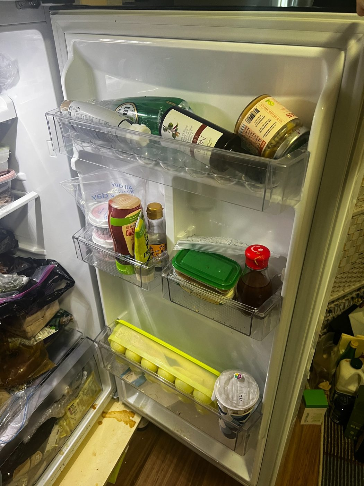
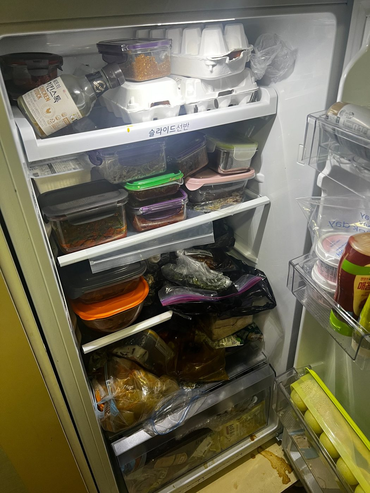
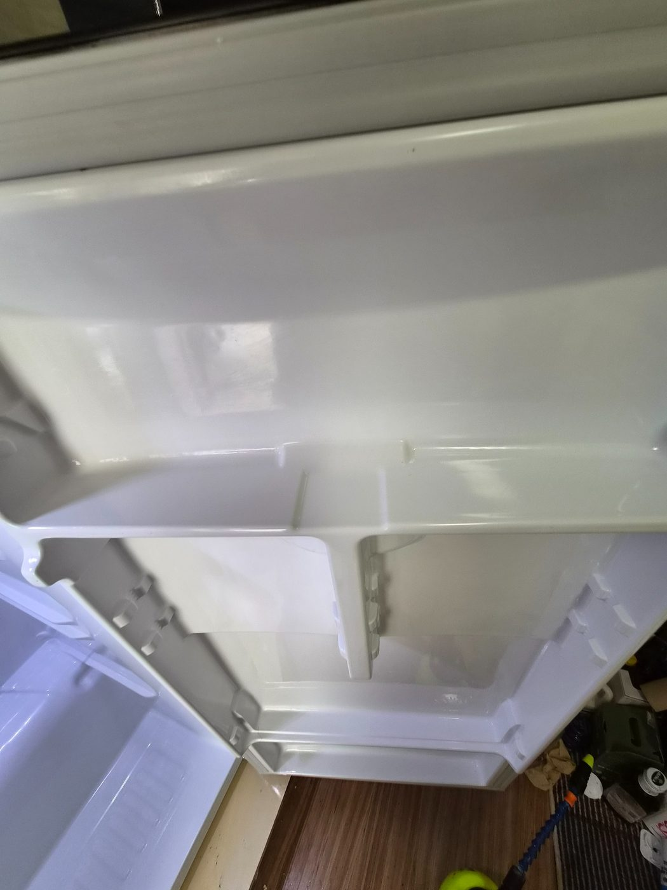
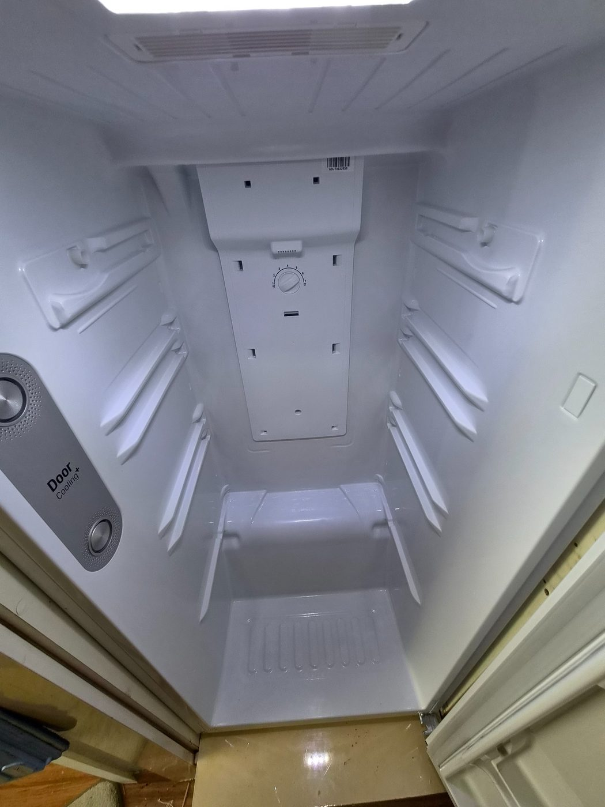
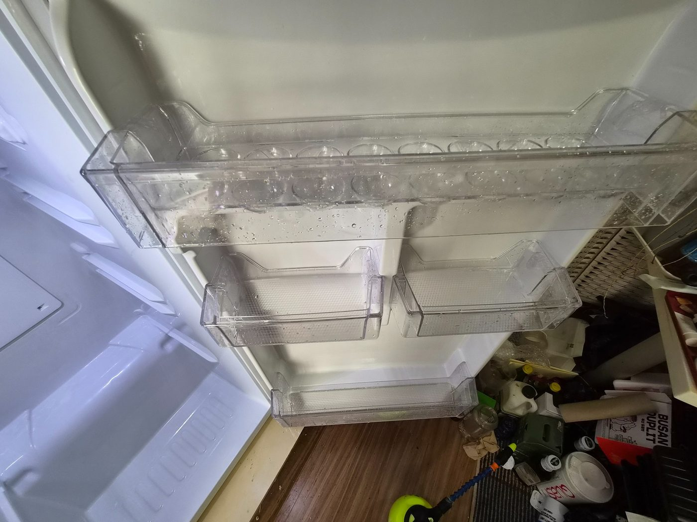
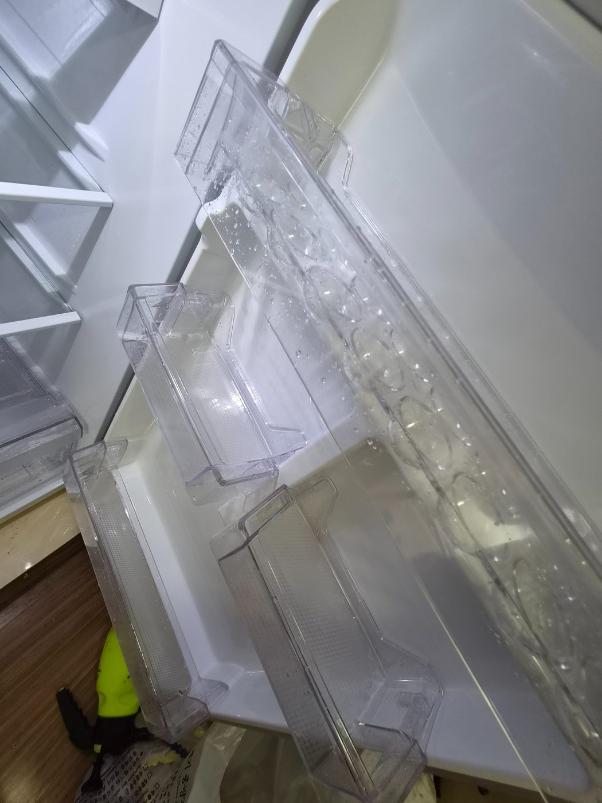

오피스텔 냉장고 내부까지 함께 정리한 현장
공실이나 이사 전후 청소에서는 냉장고 내부 선반과 도어 수납칸에 음식물 자국이나 생활오염이 남아 있는 경우가 있습니다. 이번 현장은 냉장고 내부의 청소 전후 상태가 분명하게 남아 있어 별도 작업사례로 구성했습니다.

냉장고 청소 전·후


작업 후 내부 상태



오피스텔·공실 청소 시 필요한 범위를 상담합니다
냉장고처럼 내부 옵션 가전은 현장 상태와 요청 범위에 따라 청소 여부를 확인하는 것이 좋습니다. 전체 공간 청소와 함께 진행할 항목이 있다면 무료 방문견적 시 범위를 확인해 안내드립니다.
양산 오피스텔 냉장고청소 무료 방문견적
현장 규모와 오염 상태, 관리 범위를 확인한 뒤 안내드립니다. 대량건도 문제없습니다.